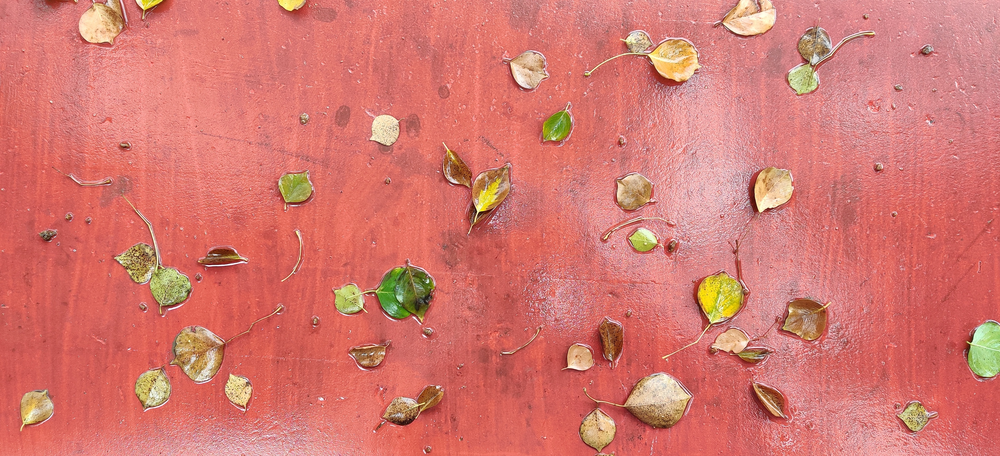
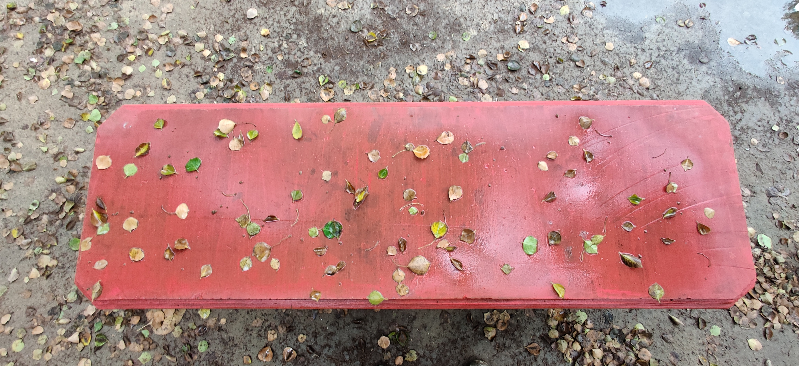
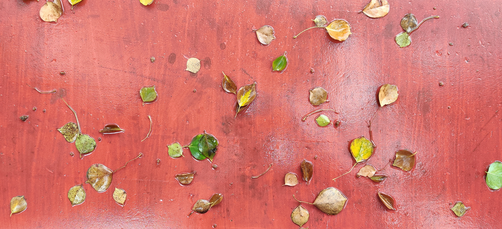
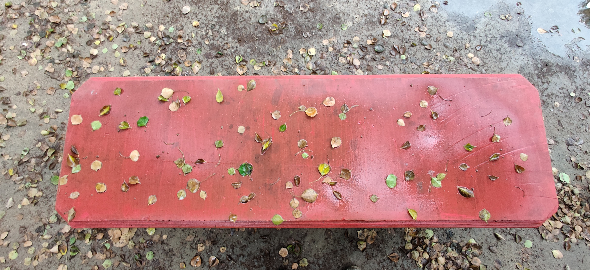
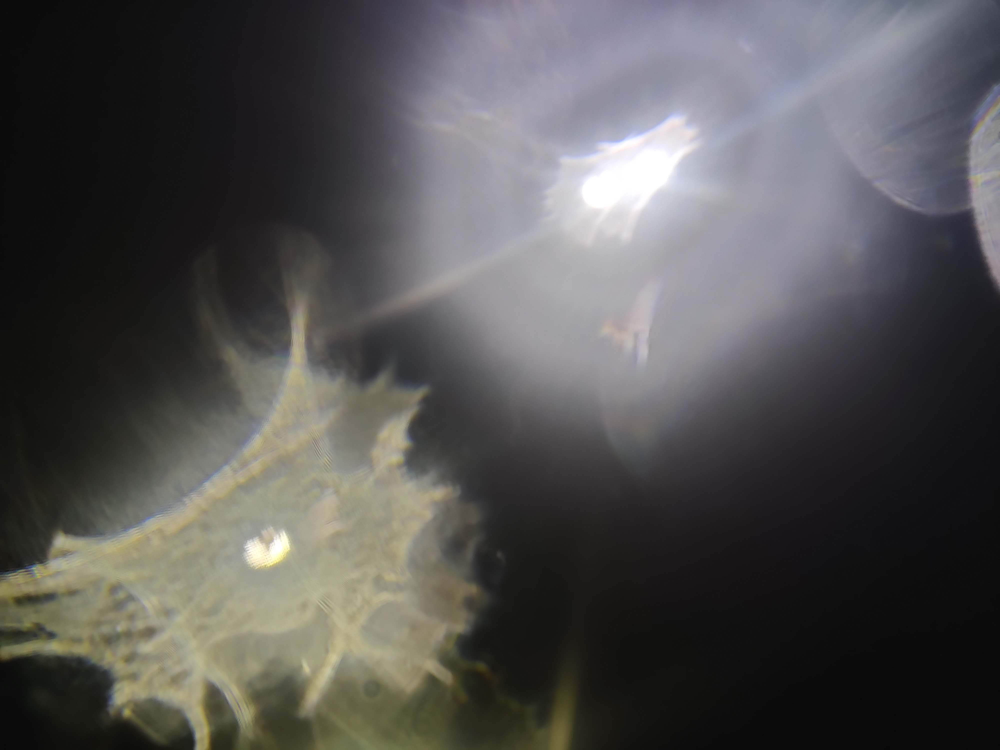
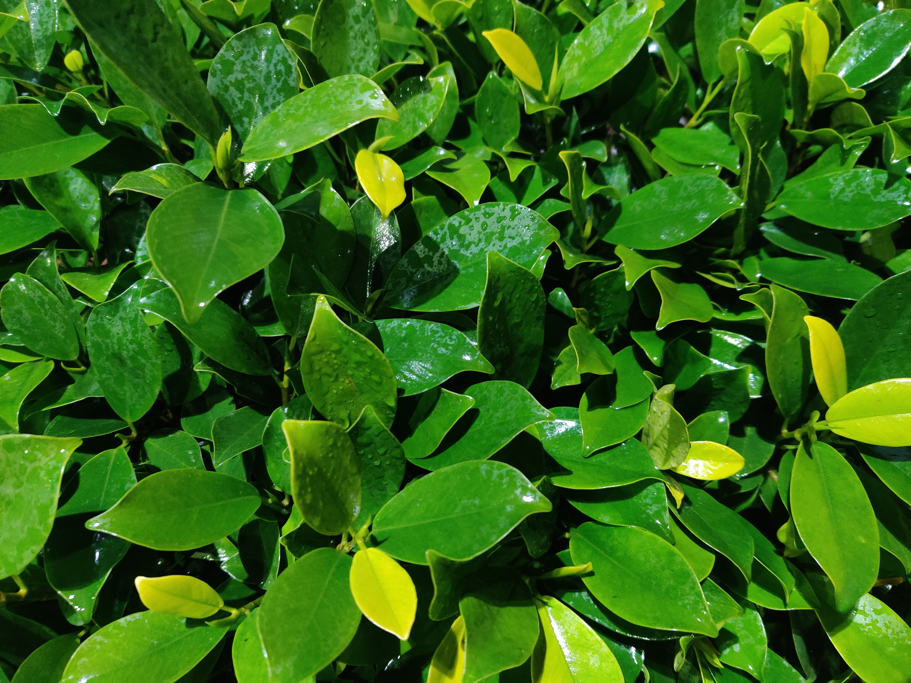
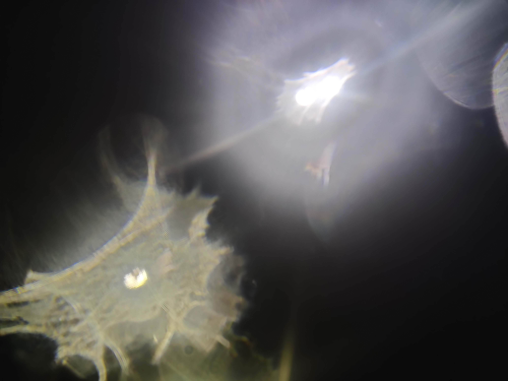
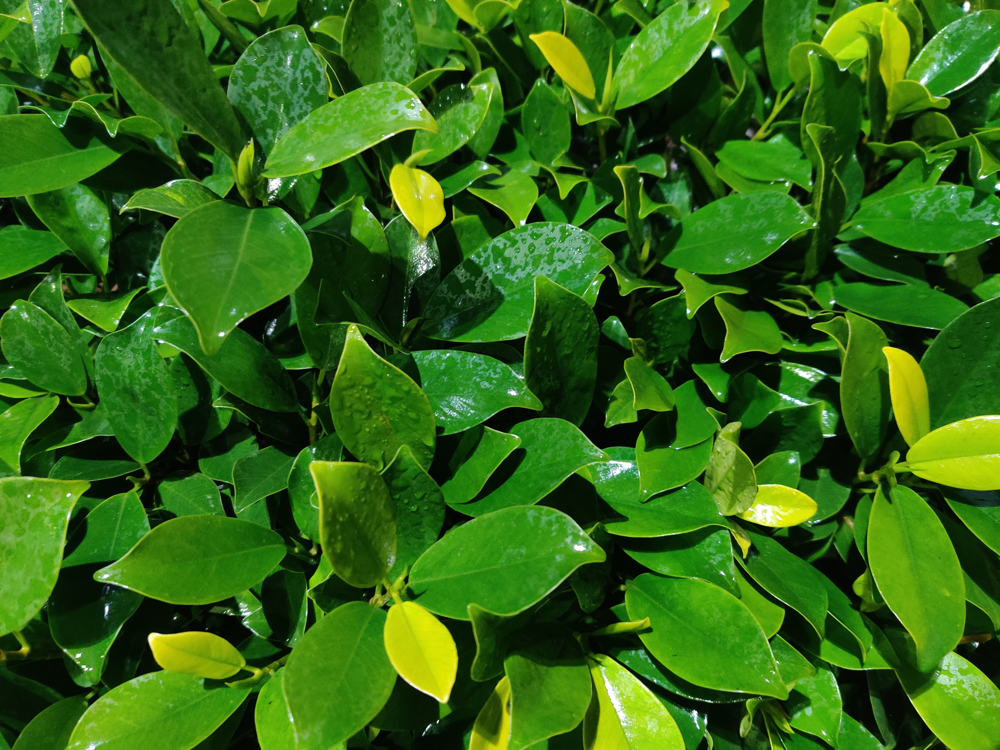
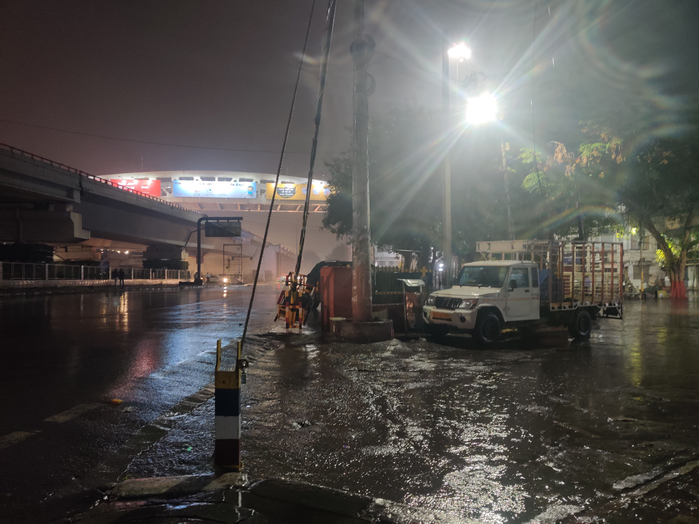
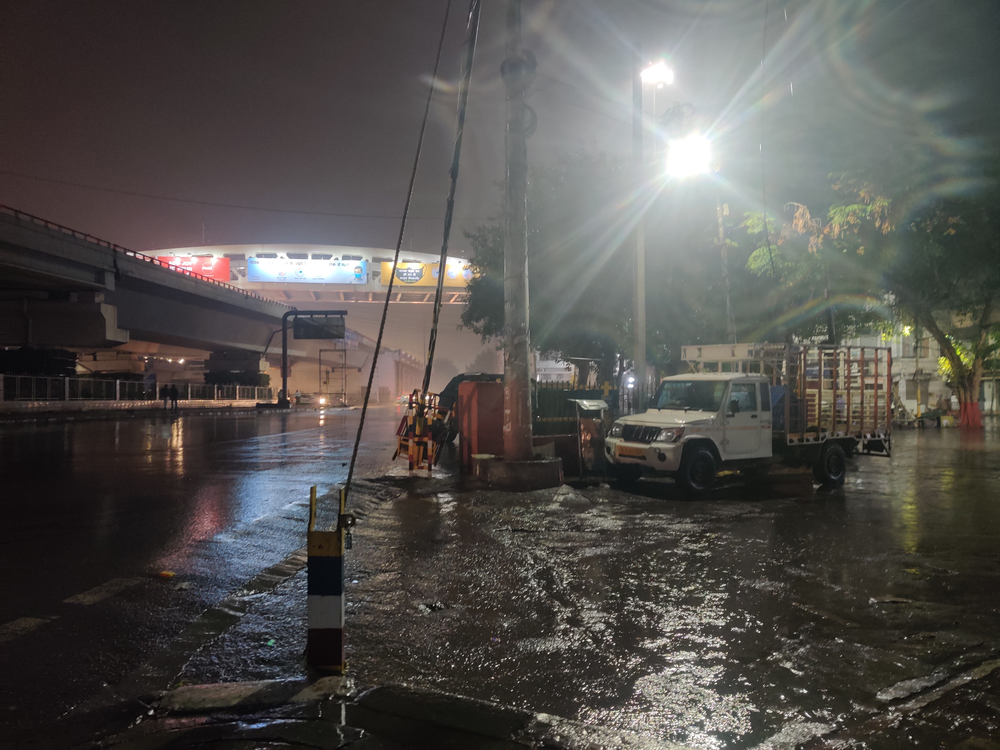

And here are the textures from it:
And here are the textures from it:


 





 Night
Night
 

And some non textures - at Rajouri Garden chowk:


And some non textures - at Rajouri Garden chowk:
 
Taken by this awkward idiot who doesn't know how to look at cameras:

Taken by this awkward idiot who doesn't know how to look at cameras:
<*- go HOME